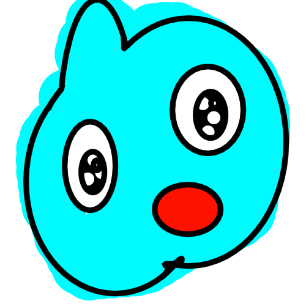
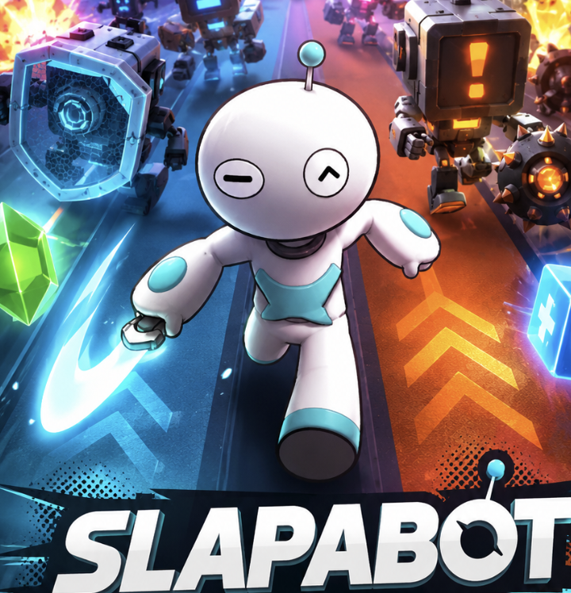
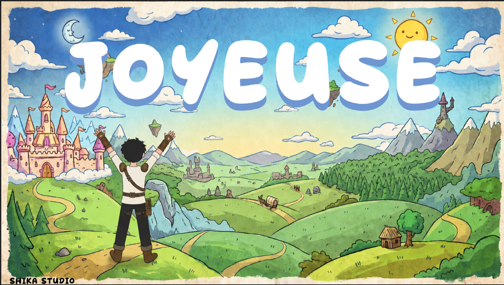
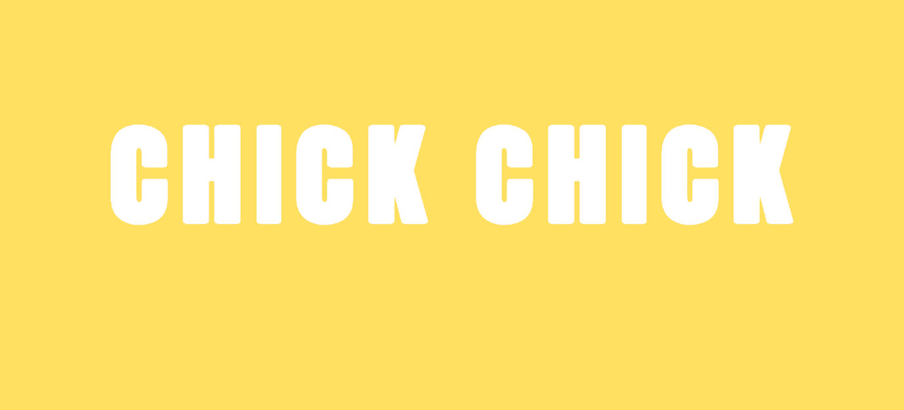
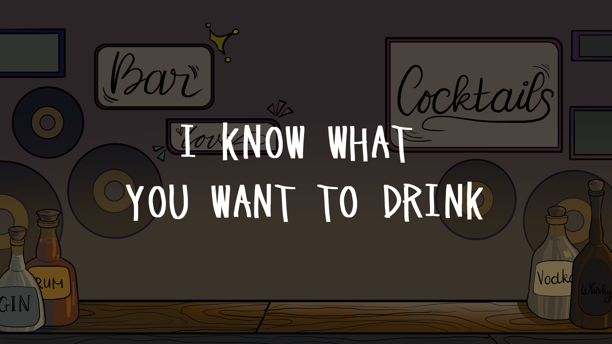
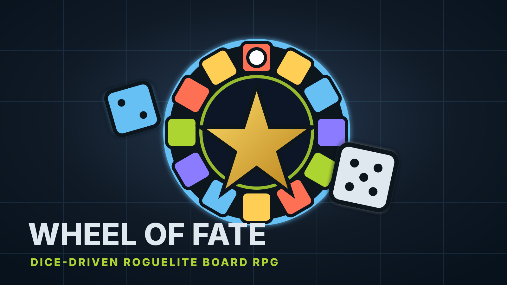

Game Design Portfolio
Đặng Đông Quân (Shika)Game Designer
Game Designer focused on turning strong gameplay hooks into clear, playable systems. I build rapid Unity prototypes around readable core loops, then refine them through pacing, feedback, player decision-making, and iteration. My design strength is connecting mechanics into systems that players can understand quickly but keep optimizing over time, from tower links and evolving board states to reaction-based combat, puzzle progression, and emotional inference.
Gameplay Systems
Unity Prototyping
Progression Design
Puzzle & Combat Loops
Design Philosophy
If a song is truly good, people will naturally want to listen to it again. Games are the same.

TOWER CONNECTIONS
23/05/2026
GameDev.tv Game Jam 2026
A 2D tower defense roguelite where players build a Nexus network between towers. Instead of relying only on tower shots, enemies are damaged, slowed, poisoned, or stunned when they cross energy links created by tower colors and placement choices.

SLAPABOT
16/05/2026
Casual Game Challenge SEASON 01
A 2-lane arcade reaction runner where players control a robot, read fast enemy patterns, and respond with slash, block, lane switch, and weapon skills. The design focuses on clean one-look readability, strong hit feedback, combo pressure, and short-run mastery.

JOYEUSE
05/04/2026
SHIKA
A 2D cozy fantasy RPG with light auto-combat, linear map progression, class-based builds, loot, skill tree upgrades, and soul collection. Players guide a young human across the tribes of Joyeuse, proving that strength comes from adaptation while growing from village challenger into an All-Round Warrior.

CHICK CHICK
21/03/2026
My First Jam! 2026
A small chick sets out on a journey to find its mother. Solve grid-based puzzles by pushing blocks, activating pressure plates, avoiding traps, and using portals to navigate each level. Each stage introduces a new mechanic and gradually combines them into more complex challenges, creating a simple yet engaging puzzle experience focused on logic and discovery.

MR.FIX-IT
05/03/2026
Gamtopia Hanoi 2026
A simulation-puzzle prototype centered on tool selection, circuit-based minigames, and time-pressure execution. Players analyze wiring problems, choose a limited set of tools before each job, and perform repairs through skill-based minigames. The design emphasizes decision-making under constraints, precision, and penalty-driven feedback.

I KNOW WHAT YOU WANT TO DRINK
03/03/2026
Global Game Jam 2026
Designed an emotional inference system where players interpret hidden emotions through environmental cues such as music and surroundings, making decisions under incomplete information. Combined with a branching outcome structure and feedback-driven consequences, the gameplay creates tension through uncertainty and player judgment.

OUTWORLD DOMINION
26/09/2025
Secret Santa 2025
Designed a fast-paced FPS roguelike system focused on continuous combat pressure, synergistic buff progression, and high-skill boss encounters. Players build power through run-based buff choices that significantly alter combat behavior, creating distinct playstyles across runs. The design emphasizes movement, fast decision-making, and replayability through controlled randomness.

WHEEL OF FATE
25/05/2026
ShikaStudio
A dice-driven roguelite board RPG where players roll around a 12-tile wheel of encounters. Each activated tile evolves after use, making rewards stronger but also turning the board into a self-made danger across the run.